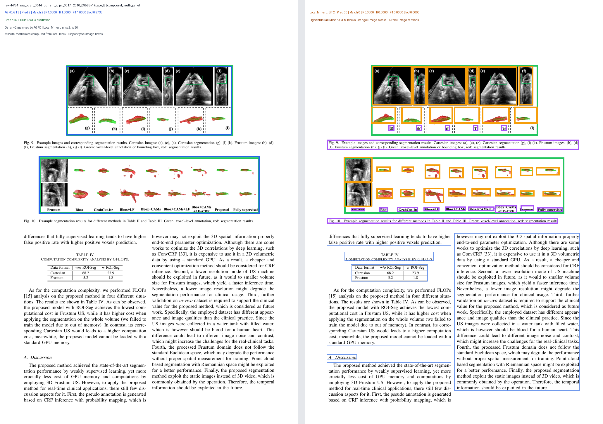

raw 44/84 · raw_id jm_0044 · current_id jm_0017
2010_09525v1#page_8 · compound_multi_panel · hard
Local MinerU 未命中 GT 图形多图/组图召回不足Local MinerU 误检 30 个AGFC F1 +1.0000
AGFC GT 2 / Pred 2 / Match 2 / F1 1.0000 / IoU 0.9738
Local MinerU GT 2 / Pred 30 / Match 0 / F1 0.0000 / IoU 0.0000 / 漏 2 / 误 30
